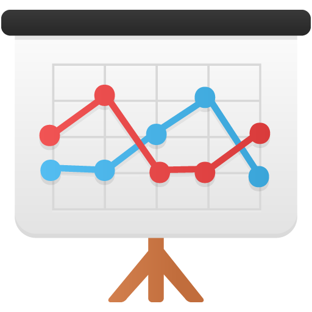

  <div class="card rounded-2xl bg-coral border-0 w-75 m-2">
          
          <div class="card-img-overlay">
            <h5 class="card-title mt-1 text-light">Connected Time Series</h3>
            <hr class="border-light mt-1 mb-4 mx-4 opac-30">
            <p class="card-text pt-0 my-0">
            <ul class="fa-ul text-sm text-left text-comfo text-light bg-transparent rounded-2xl pt-0 mt-2">
              <li><span class="fa-li"><i class="fas fa-circle"></i></span>
                dots represents the presidential elections
              </li>
              <li><span class="fa-li"><i class="fas fa-minus"></i></span>
                lines are projection of change hypotetically
              </li>
              <li><span class="fa-li"><i class="fas fa-sliders-h"></i></span>
                slider determines the year for bar/row chart
              </li>
              <li><span class="fa-li"><i class="fas fa-chart-bar"></i></span>
                bar chart shows red blue percentage
              </li>
              <li><span class="fa-li"><i class="fas fa-mouse-pointer"></i></span>
                click on the state row on the table
              </li>
              <li><span class="fa-li"><i class="fas fa-sort-amount-down"></i></span>
                or  choose state from dropDown fixed on top
              </li>
            </ul>                          
            </p>
          </div>
        </div>
